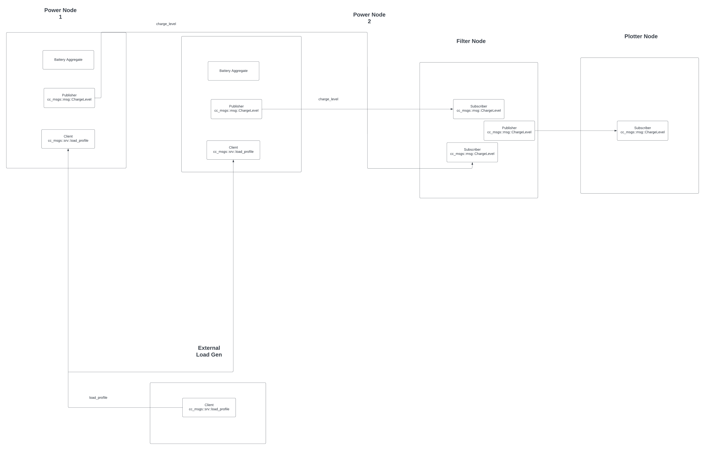
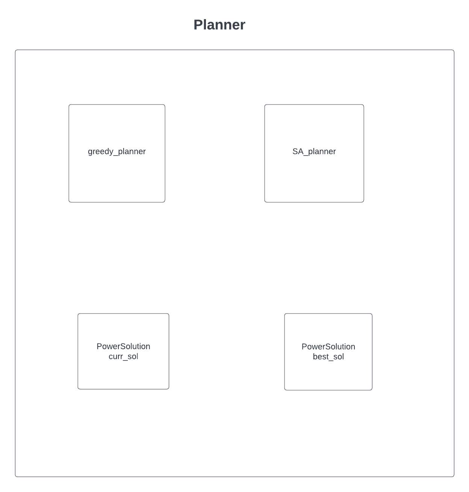
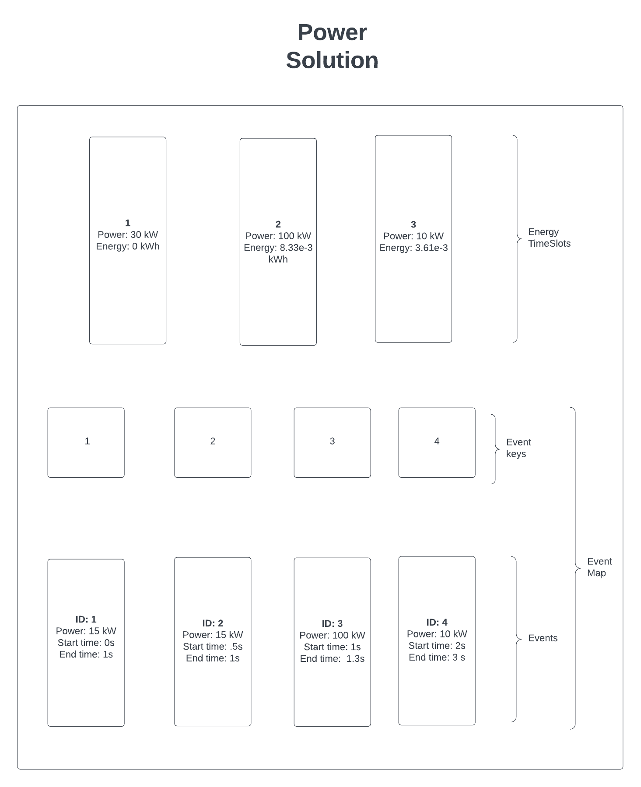
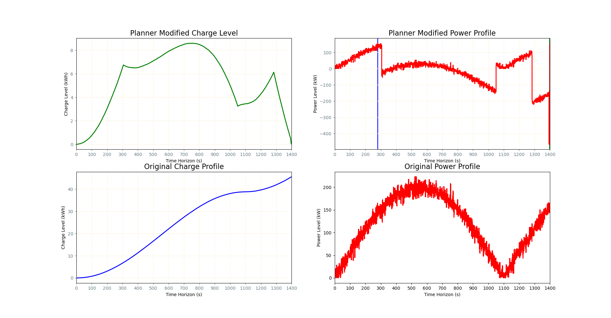
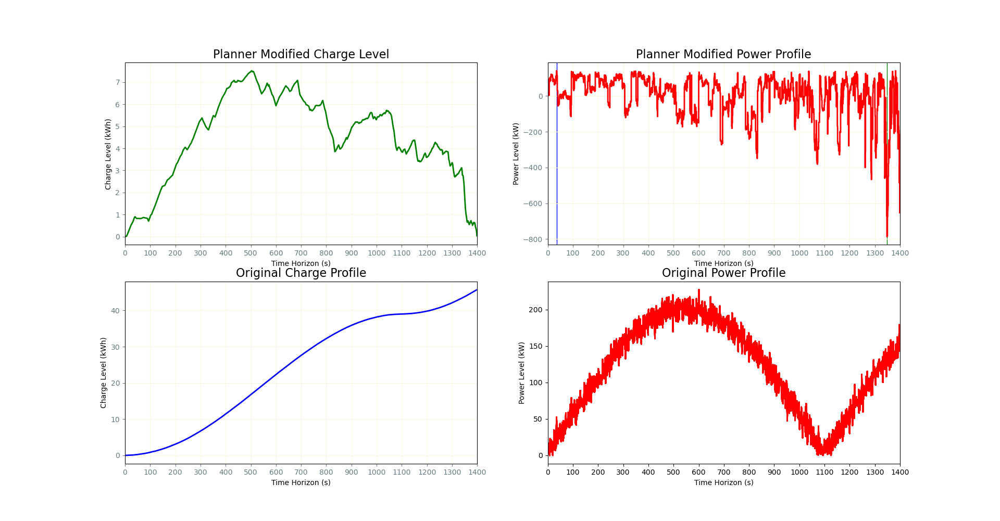
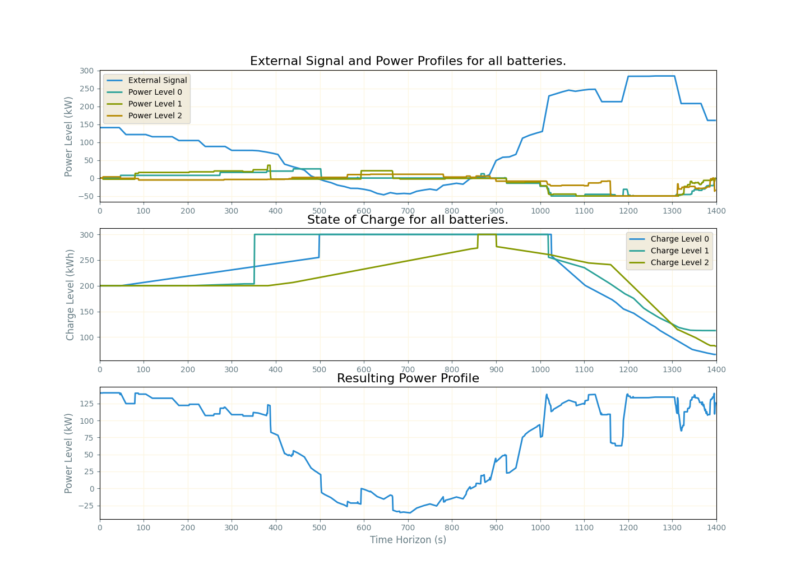

Connected Communities Simulated Annealing
Getting Started
Downloading and Setting Up Workspace
This code base was built on ROS 2 Humble Haskell. This ROS Distro must be installed to run the code. The instructions assume you are using a Debian-based distribution.
Each of the required repositories can be downloaded using the wstool tool. To use wstool, follow these steps:
- Create a workspace folder that will house the project:
mkdir -p ~/connected_communities_SA/src - Navigate to the
srcfolder - Create a new rosinstall file called
cc.rosinstallwith the following contents:
- git: {local-name: connected_communities_SA,
uri: 'git@github.com:timdodge54/Simulated-Annealing-Power-Planning.git',
version: main}
- Run the following commands:
wstool init .
wstool merge cc.rosinstall
wstool up
Creating Python Virtual Environment
To create a virtual environment, you must be in the root of the workspace. The command below will create an alias for creating the needed virtual environment into your bashrc:
alias make_cc_venv='python3 -m venv --system-site-packages venv && touch venv/COLCON_IGNORE'The following command is an alias that will allow you to build the code. IT MUST BE RUN FROM THE ROOT OF THE WORKSPACE.
Building the Code
For all other builds, the following alias can be used. It will source the environment and build the code:
alias build='source venv/bin/activate && colcon build --symlink-install && . install/setup.bash'Description of Code
The overall node structure is shown in the figure below:
The main ROS node that performs all calculations is the power node. Several of these nodes can run simultaneously. Each node passes its information to a filter node, which waits for all nodes to execute and then passes the information to the plotter node. The planner class is responsible for generating and accepting new solutions. It houses both a greedy and a Simulated Annealing planner.
Within the planner class, solutions are held. The diagram for the solution class is shown below:
- EnergyTimeSlots: This data member tracks the SOC of the battery over time. Each index of this data member stores the conservative power estimate defined and the accumulated energy based on the power and energy of the previous index within the
EnergyTimeSlotsdata member. - Event Map: This is a hash map that associates event IDs with a struct containing information such as event ID, power, start time, and end time.
Running the Code
To run the BatteryAggregateBrute class and see the overall timing as well as the average timing of adding and removing events, run the following command:
ros2 launch power_energy_propogation test_battery_aggregation_brute.launch.pyResults
Greedy Results
Simulated Annealing Results
Results with Multiple Batteries
